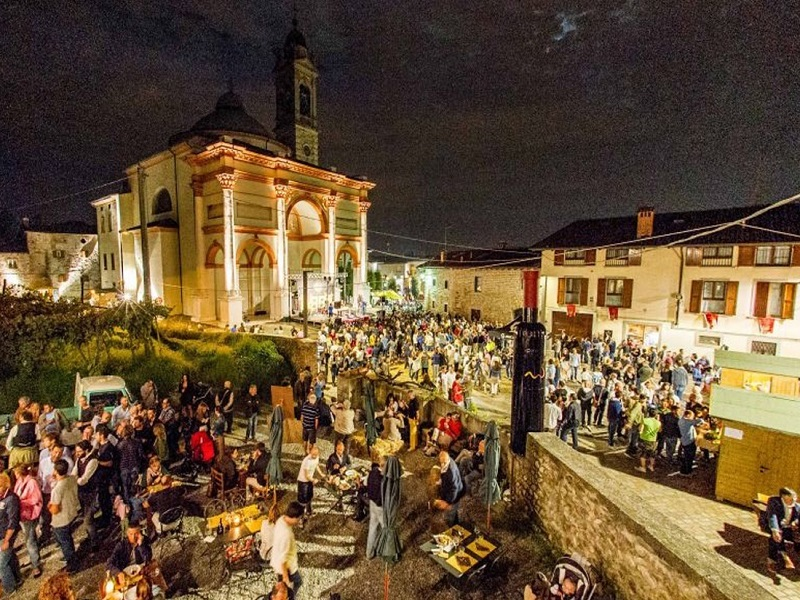
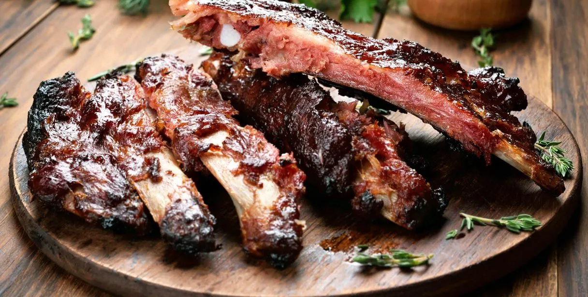

Sagre e feste
“Sapori genuini, risate e tradizione: la magia delle feste locali ti aspetta.”
Le sagre e le feste di paese sono momenti speciali in cui i borghi e le comunità locali si animano di allegria, musica e tradizioni. Tra profumi di cucina tipica, eventi culturali e giochi per grandi e piccoli, ogni festa racconta la storia di un territorio e delle persone che lo abitano. Partecipare a una sagra significa immergersi in un’atmosfera di convivialità, scoprire sapori autentici e vivere esperienze uniche, tra folklore, divertimento e incontri con amici e familiari. Scopri cosa il nostro paese ha da offrire e lasciati guidare dalla magia delle feste di paese, dove ogni angolo ha qualcosa da celebrare.
Di seguito riportate le due più importanti feste e sagre del comune di scanzorosciate e dintorni.
Festa del Moscato di Scanzo

La Festa del Moscato di Scanzo celebra il famoso vino locale con degustazioni, bancarelle gastronomiche e musica dal vivo. Ogni anno il centro si anima di produttori, artisti e visitatori che vengono a scoprire le eccellenze del territorio. Durante la festa si svolgono anche visite alle cantine, laboratori per bambini e spettacoli tradizionali.
Controlla il calendario comunale per le date aggiornate e gli orari degli eventi.
Sagra Negronese

La Sagra Negronese è un evento dedicato alla valorizzazione del territorio e della comunità locale. Durante la manifestazione è possibile gustare piatti tipici preparati con ingredienti del territorio nelle cucine dell’oratorio del paese di Negrone.
La sagra è un momento di convivialità e scoperta della cultura gastronomica locale.
Solitamente la festa dura 10 giorni, a partire ogni giorno dalle ore 19.00 fino alla chiusura della cucina. Ogni sera sono previste pesca di beneficenza e tombola, mentre la domenica è possibile pranzare presso la struttura dalle ore 12:00.